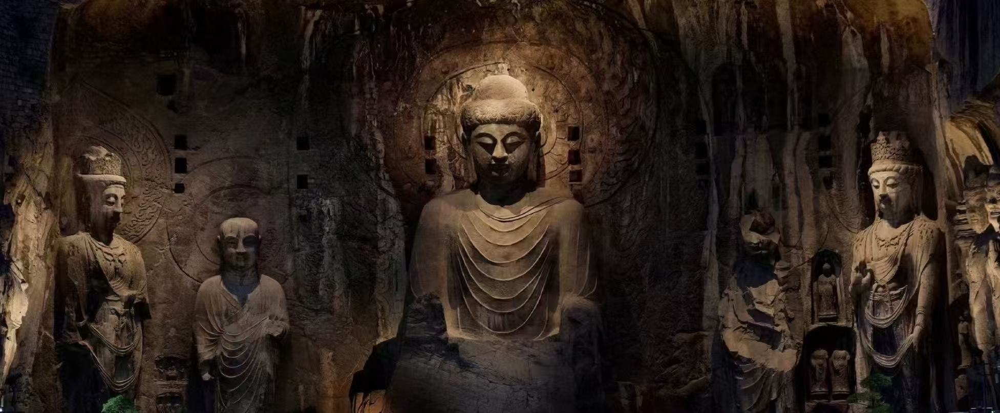
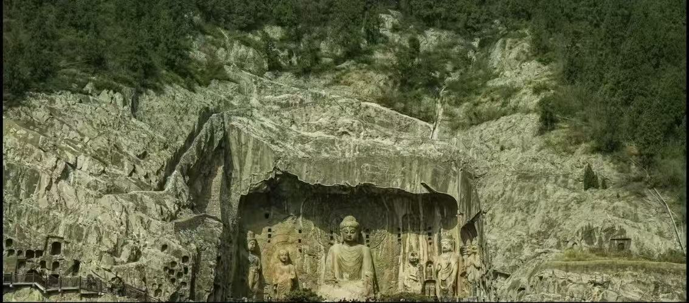

龙门石窟位于河南省洛阳市洛龙区伊河两岸的龙门山与香山上，始凿于北魏孝文帝迁都洛阳之际，历经十余个朝代营造，历时长达500余年，是世界上造像最多、规模最大、营造时间最长的石刻艺术宝库。
2000年被列入《世界文化遗产名录》，与敦煌莫高窟、大同云冈石窟并称为中国三大石窟，以卢舍那大佛为代表，尽显唐代石刻艺术的雄浑与精美。

📍 地址：河南省洛阳市洛龙区龙门镇
🎫 门票：成人票90元，学生半价，60岁以上老人、1.4米以下儿童免票
⏰ 开放时间：
旺季（3.1-10.31）08:00-18:00
淡季（11.1-2.28）08:00-17:00
🚗 交通指南
🍜 洛阳特色美食
西北入口 → 西山石窟 → 奉先寺卢舍那大佛 → 漫水桥 → 东山石窟 → 香山寺 → 白园 → 出口
全程约3-4小时，西山石窟为精华区域，建议重点游览。
1. 全程台阶较多，务必穿舒适运动鞋。
2. 卢舍那大佛上午光线最好，拍照更清晰。
3. 洞窟内禁止使用闪光灯，保护文物。
4. 景区较大，建议自带饮用水，轻装简行。
5. 夜游龙门体验极佳，可提前查询开放时间。
6. 尊重宗教文化，不大声喧哗、不攀爬触摸文物。
春季4-5月牡丹盛开，气候宜人；秋季9-11月天高气爽，景色最佳。夏季较热，冬季游客较少，适合安静游览。